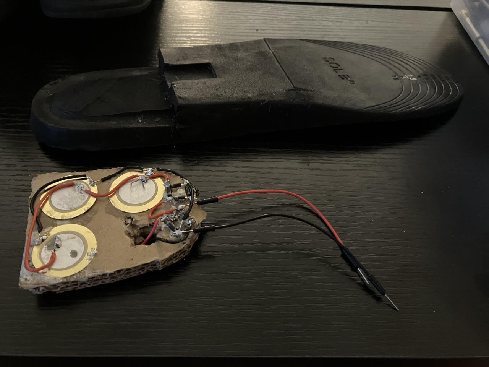

Projects
"Biocharge" Energy Harvesting Device
Engineering Senior Design
Senior Design Capstone project with the goal of developing a wearable biomechanical energy harvesting device to charge an iPhone with a net zero carbon footprint. Narrowed down a list of biomechanical charging mechanisms through materials processing to the compression of double-layered lead zirconate titanate crystal as an additive component of footwear. Sketched, designed, and reiterated prototypes using Solidworks, PLC Systems, and 3-D printed support structures. Successfully charged an iPhone 14 as part of a Senior Design Expo.

(Picture of BioCharge Being Inserted into Shoe Sole, 2023)

(Picture of First Prototype in CAD)

(Picture of Second Prototype in CAD)

(Single Layer of Soldered Piezoelectric System)